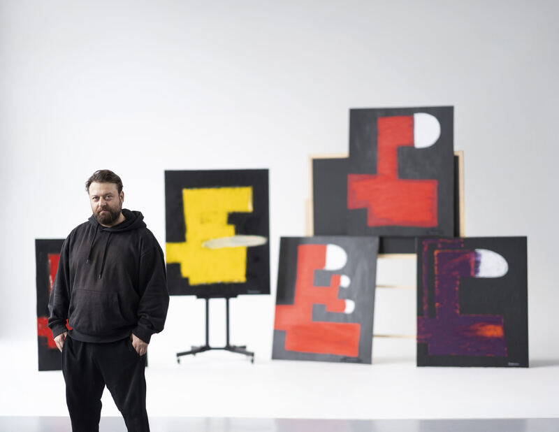

About the artist
Paul Sergounine

Paul Sergounine (b. 1984) is a contemporary painter working between Düsseldorf and Tbilisi. He is represented by Galerie Bruno Massa.
He grew up in Düsseldorf, where he attended the International School of Düsseldorf, and later studied at Webster University in Leiden and Vienna and at ISG in Paris. After many years living and working internationally, he established his studio in Tbilisi in 2021.
Sergounine works in oil stick and oil pastel on a black acrylic ground. The black ground was the founding decision of the practice: it returns no atmosphere and no depth, so every mark stays on the surface as its own record. Compositions develop through cycles of accumulation, interruption, abrasion and revision, under deliberate constraint — limited palette, fixed scale, and structural rules set in advance and tested against during the work.
His current body of work, Mind Mechanics (2025–), is a projected series of 250 paintings across five scales, from 100 × 120 to 200 × 240 cm, numbered sequentially rather than titled. A recurring head profile runs throughout — not a portrait but an architectural framework, a vessel for thought rather than identity. Rather than depicting figures, the paintings function as internal diagrams of systems under pressure. Since No. 58 the series has begun to consume itself: earlier paintings are cut, overpainted and grafted into later ones, where they survive only as layers inside the work that absorbed them. A parallel series, Totems (2025–), develops the same concerns in vertical, architectural form.
In February 2027 his work will be shown at the CICA Museum in Gimpo-si, South Korea.
Statement
I do not paint to decorate, illustrate, or comfort. I paint to expose the unstable architecture of thought.
My work explores the invisible systems through which memory, perception, and identity are constructed. Rather than depicting external reality, I investigate the internal mechanics of consciousness — how experiences accumulate, fragment, erode, and reorganize over time. Each painting is conceived as a psychological landscape where order and instability exist simultaneously.
Working with acrylic ground, oil stick, and oil pastel, I build surfaces through repeated cycles of construction, interruption, abrasion, and revision. Every visible mark records both a decision and its transformation. I deliberately preserve traces of earlier gestures, allowing the painting to reveal its own history rather than conceal it. The finished image is not a representation of certainty, but the residue of an evolving process.
I have no interest in the finish that training produces. The mark stays as it was made — hurried, corrected, sometimes wrong — because refinement would erase precisely what the painting is a record of. What I want from a surface is the evidence of a hand deciding in real time, not the proof of a skill already acquired. Spontaneity here is not an absence of rigour but its condition: the structure only means something if something inside it is allowed to go wrong.
My paintings do not seek definitive answers. They invite viewers to enter an open psychological space where meaning is constructed through observation, projection, and reflection. In this sense, each work becomes less an image of the mind than an active model of how consciousness itself is continually formed and transformed.
Curriculum Vitae